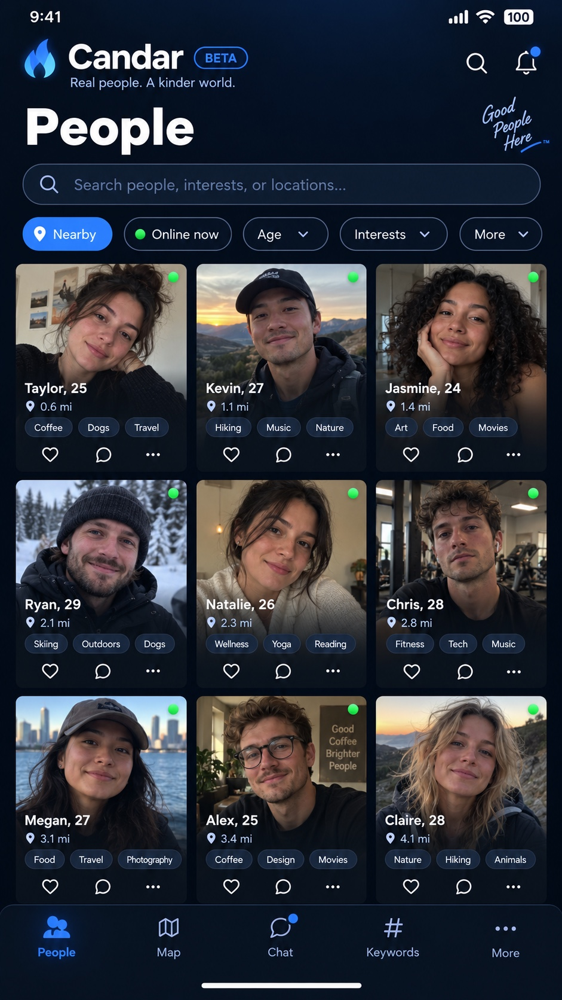
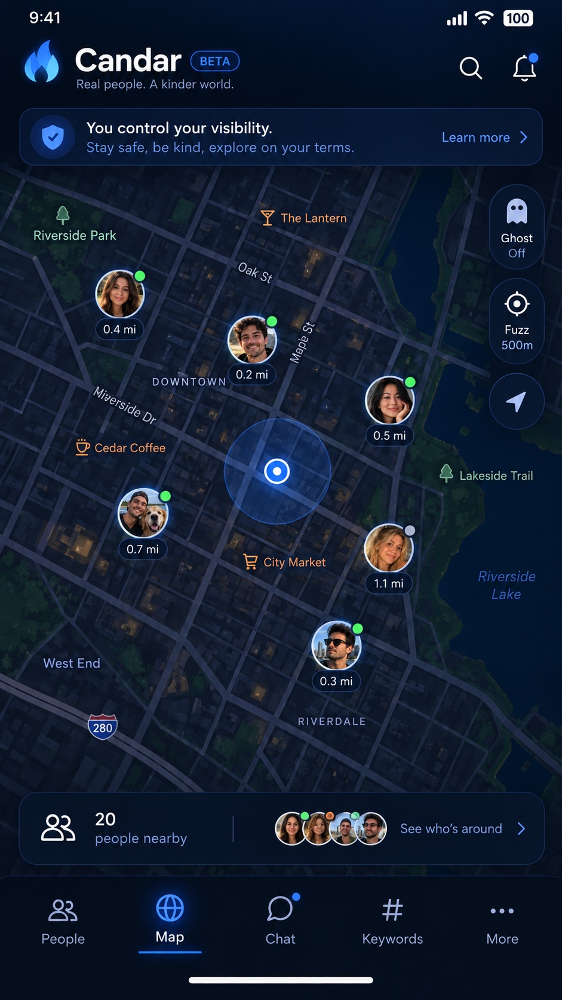

Your choice.
Your Candar.
You are not a disposable product. Candar is built around a simple idea: adults should be able to connect without routinely surrendering their privacy, identity or dignity.
- Privacy should not be routinely surrendered.
- Candar does not want ordinary account creation tied to passports, government ID, facial scans or phone numbers.
- Candar is not built around packaging and selling personal information.
- Moderation should be proportionate and human where circumstances allow.
- Privacy. Choice. Respect. Value. Care.
Android pre-release APK • Test build



Help us build Candar
Use Candar naturally. We're interested in what feels good, what feels slow, what is confusing, and anything that simply doesn't behave the way you expect.
Because you are not a disposable product.
You have a right to privacy. Candar is not interested in your ID, or packaging your information — you — to sell off to corporations.
Why Candar exists.
Social media has changed enormously. Along the way, privacy has too often become something people are expected to surrender simply to participate online.
Identity checks. Biometric scans. Government-issued documents. Extensive data collection. Profiling. Tracking. And then there are accounts suspended or removed with little explanation — or none at all — and no meaningful way to speak to another human being.
People can be restricted, banned or removed without really understanding why, and often with very little recourse.
Candar believes there should be another way.
Candar believes privacy is a fundamental part of personal freedom. Adults should be able to meet, communicate and socialise without routinely surrendering sensitive identity documents or biometric information simply for the privilege of participating online.
That is why Candar does not want your passport, your government ID, facial scans or phone number simply to create an ordinary account.
Your identity belongs to you.
Candar is built for adults, and intended to treat adults accordingly.
Candar is not being built around collecting your personal information simply so that it can be packaged, profiled or sold.
Another reason Candar exists is the way people can sometimes be treated when something goes wrong on large platforms.
Ever been banned or removed and not known why such extreme action was taken?
A person can spend years building friendships, communities and connections, then suddenly find an account restricted or removed with little explanation — or no explanation — and no realistic opportunity to understand what happened.
Sometimes serious action is absolutely necessary. Abuse, deliberate harassment, dangerous behaviour and unlawful activity cannot simply be ignored.
But not every mistake is malicious. People misunderstand rules. People make mistakes. Automated systems make mistakes too.
Where circumstances allow, Candar wants to explain what went wrong and give someone an opportunity to correct it before resorting to permanent removal.
Serious or deliberate abuse can still result in account termination. But ordinary users should not be treated as disposable simply because something went wrong.
People deserve clarity, proportion and respect.
Privacy. Choice. Respect. Value. Care.
Candar wants adults to be able to meet, connect and communicate while remaining in control of their identity, their information and how much of themselves they choose to share.
Candar will continue to improve with the people who use it. Mistakes will happen, but Candar will work to correct them.
Candar will continue working toward a platform where privacy is not treated as something you must surrender simply to belong.
Your identity is yours.
Your connections are your choice.
People, discovery and filters.
Once your profile is set up, your discovery preferences help determine which profiles Candar shows you in the Main Grid.
Once your profile is set up, your discovery preferences help determine which profiles Candar shows you in the Main Grid.
The Main Grid has its own powerful filter search. When you use those filters, they become your active search criteria and override your normal profile preferences for that search.
Members can choose whether the distance shown on their profile is visible to other people in the Main Grid.
Likes let another member know you are interested. Favourites are separate and give you a convenient way to keep track of profiles you want to find again.
You choose your level of comfort with Candar Maps
Candar Maps are optional and designed around user control. You decide whether you use the Map, whether other people can see you, and how precise your displayed location should be.
Explore while keeping control.
Explore member avatars on the Map while keeping control of visibility, Ghost Mode and Fuzz privacy settings.
You do not have to use Candar's Map Drop Dating feature at all. Candar can still be used for profiles, discovery, Likes, Favourites and messaging without appearing on the Map.
Go to More → Safety Center → Show my profile on the map and use the toggle whenever you want to appear or disappear from Candar Maps.
Premium members can use Ghost Mode to keep using and exploring Candar Maps while making their own profile invisible to other members.
If you choose to use Maps, Candar is designed so your avatar does not simply remain visible indefinitely. Your Map presence is removed when you stop using Candar for about three minutes, switch to another app, minimise Candar or leave it running in the background, enable Ghost Mode, switch Map visibility off, or otherwise stop actively using Candar.
Try it: Appear on the Map, leave Candar untouched for a few minutes and watch your avatar disappear. Start using Candar again and check that your Map presence returns.
Candar includes a location privacy feature called Fuzz. Instead of placing your Map pin directly on your actual position, Fuzz can deliberately offset the location shown to other members by as much as 500 metres, depending on your selected setting.
When you sign into Candar, Fuzz begins at the highest level available in your profile by default. You can then change the Fuzz level or disable it from the Map settings if you choose.
Try it: Change the Fuzz setting and check how your displayed Map position responds.
Chat, photos and Location Drop.
Chat includes photo tabs and photo sharing, message editing, reactions, Delete for Me, Delete for Everybody and other message controls.
Chat includes photo tabs and photo sharing, message editing, reactions, Delete for Me, Delete for Everybody and other message controls.
Keywords are deliberately specific. If you choose to use them, Candar can show profiles using the same keywords, helping you find people with genuinely matching interests.
Other things worth testing
Candar also includes a number of discovery, privacy and communication features that work together across the app.
Designed differently by Candar
Candar is not just another social app with a different logo. We are building features around privacy, choice, courtesy and keeping people in control of how they connect.
Candar product names, original interface copy, website text and original visual presentation © 2026 Candar.
Try the Android Beta.
Use Candar naturally. We're interested in what feels good, what feels slow, what is confusing, and anything that simply doesn't behave the way you expect.
Beta Feedback
Found something? Tell us what happened. Short reports are perfectly fine.